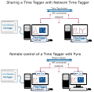

Remote Time Tagger with Python
{kind=link}
The Time Tagger is a great instrument for data acquisition whenever you detect, count, or analyze single photons. You can quickly set up a time correlation measurement, coincidence analysis, and much more. However, at some point in your project, you may want to control your experiment remotely. One option is to use remote desktop software like VNC, TeamViewer, Windows Remote Desktop, etc. What if you want to control your remote experiment programmatically? Are you using multiple computers and want to collect data from many of them at the same time? The solution for this is a remote control interface. Luckily, this task is very common and many software libraries cover the challenge of dealing with network sockets and messaging protocols.
In the following, we want to demonstrate two ways of connecting to a Time Tagger over a network: Network Time Tagger and Pyro5.
Network Time Tagger is an ideal solution for sharing a Time Tagger between different computers. By using Network Time Tagger, a remote computer has direct access to the Time Tag stream and can perform measurements locally, as if the Time Tagger was directly connected over USB. Pyro on the other hand can be used to access a Time Tagger remotely. From a remote computer, Pyro can start measurements on the computer connected to the time tagger and return the results.
Remote control of a Time Tagger with Pyro
Pyro5 is a Python library that allows operation of a Time Tagger from a remote computer. It is able to send API commands to the remote Time Tagger and to obtain their return values. In the following, we describe how to use Pyro5 and achieve seamless access to the Time Tagger’s API remotely.
import matplotlib.pyplot as plt
from Pyro5.api import Proxy
TimeTagger = Proxy("PYRO:TimeTagger@server:23000")
tagger = TimeTagger.createTimeTagger()
hist = TimeTagger.Correlation(tagger, 1, 2, binwidth=5, n_bins=2000)
hist.startFor(int(10e12), clear=True)
x = hist.getIndex()
while hist.isRunning():
plt.pause(0.1)
y = hist.getData()
plt.plot(x, y)
Remote procedure call
Remote procedure call (RPC) is a technology that allows interaction with remote programs by calling their procedures and receiving the responses. This involves a real code execution on one computer (server), while the client computer has only a substitute object (proxy) that mimics the real object running on the server. The proxy object knows how to send requests and data to the server and the server knows how to interpret these requests and how to execute the real code.
In the case of Pyro5, the proxy object and server code are provided by the library
and we only need to tell Pyro5 what we want to become available remotely.
Initial setup
You will need to have a Python 3.6 or newer installed on your computer. We recommend using Anaconda distribution.
Install the Time Tagger software if you have not done it yet. The description below assumes that you have the Time Tagger hardware and are familiar with the Time Tagger API.
The last missing part, the Pyro5 package, you can install from PyPi as
pip install Pyro5
Minimal example
Here we start from the simplest functional example and demonstrate working remote communication. The example consists of two parts: the server and the client code. You will need to run those in two separate command windows.
Server code
We need to create an adapter class with methods that we want to access remotely and decorate it with
Pyro5.api.expose().
The following code is very simple. Later, we will extend it to expose more of the Time Tagger’s functionality.
import Pyro5.api
import TimeTagger as TT
@Pyro5.api.expose
class TimeTaggerRPC:
"""Adapter for the Time Tagger Library"""
def scanTimeTagger(self):
"""This method will become available remotely."""
return TT.scanTimeTagger()
if __name__ == '__main__':
# Start server and expose the TimeTaggerRPC class
with Pyro5.api.Daemon(host='localhost', port=23000) as daemon:
# Register class with Pyro
uri = daemon.register(TimeTaggerRPC, 'TimeTagger')
# Print the URI of the published object
print(uri)
# Start the server event loop
daemon.requestLoop()
Client code
On the client side, we need to know the unique identifier of the exposed object, which was printed when you started the server. In Pyro5, every object is identified by a special string (URI) that contains the object identity string and the server address. As you can see in the code below, we do not use the Time Tagger software directly but rather communicate to the server that has it.
import Pyro5.api
# Connect to the TimeTaggerRPC object on the server
# This line is all we need to establish remote communication
TimeTagger = Pyro5.api.Proxy("PYRO:TimeTagger@localhost:23000")
# Now, we can call methods that will be executed on the server.
# Lets check what Time Taggers are available at the server
timetaggers = TimeTagger.scanTimeTagger()
print(timetaggers)
>> ['1740000ABC', '1750000ABC']
Congratulations! Now you have a very simple but functional communication to your remote Time Tagger software.
Creating the Time Tagger
By now, our code can communicate over a network and can only report the serial numbers of the connected Time Taggers.
In this section, we will expand the server code and make it more useful.
The next most important feature of the server is to expose the createTimeTagger() method
to tell the server to initialize the Time Tagger hardware.
You may be tempted to extend the TimeTaggerRPC class as follows:
@Pyro5.api.expose
class TimeTaggerRPC:
"""Adapter for the Time Tagger Library"""
def scanTimeTagger(self):
"""Return the serial numbers of the available Time Taggers."""
return TT.scanTimeTagger()
def createTimeTagger(self):
"""Create the Time Tagger."""
return TT.createTimeTagger() # This will fail! :(
To our great disappointment, the createTimeTagger method will fail when you try to access it from the client. The reason is in how the RPC communication works. The data and the program code have a certain format in which it is stored in the computer’s memory, and this memory cannot be easily or safely accessed from a remote computer. The RPC communication overcomes this problem using data serialization, i.e., converting the data into a generalized format suitable for sending over a network and understandable by a client system.
The Pyro5, more specifically the serpent serializer it employs by default,
knows how to serialize the standard Python data types like a list of strings returned by scanTimeTagger().
However, it has no idea how to interpret the TimeTagger object returned by the createTimeTagger().
Moreover, instead of sending the TimeTagger object to the client,
we want to send a proxy object which allows the client to talk to the TimeTagger object on the server.
For the TimeTagger, we define an adapter class. Then we modify the TimeTaggerRPC.createTimeTagger
to create an instance of the adapter class, register it with Pyro, and return it.
Pyro will automatically take care of creating a proxy object for the client.
@Pyro5.api.expose
class TimeTagger:
"""Adapter for the Time Tagger object"""
def __init__(self, args, kwargs):
self._obj = TT.createTimeTagger(*args, **kwargs)
def setTestSignal(self, *args):
return self._obj.setTestSignal(*args)
def getSerial(self):
return self._obj.getSerial()
# ... Other methods of the TT.TimeTagger class are omitted here.
@Pyro5.api.expose
class TimeTaggerRPC:
"""Adapter for the Time Tagger Library"""
def scanTimeTagger(self):
"""Return the serial numbers of the available Time Taggers."""
return TT.scanTimeTagger()
def createTimeTagger(self, *args, **kwargs):
"""Create the Time Tagger."""
tagger = TimeTagger(args, kwargs)
self._pyroDaemon.register(tagger)
return tagger
# Pyro will automatically create and send a proxy object
# to the client.
def freeTimeTagger(self, tagger_proxy):
"""Free Time Tagger. """
# Client only has a proxy object.
objectId = tagger_proxy._pyroUri.object
# Get adapter object from the server.
tagger = self._pyroDaemon.objectsById.get(objectId)
self._pyroDaemon.unregister(tagger)
return TT.freeTimeTagger(tagger._obj)
Measurements and virtual channels
By now, we can list available Time Tagger devices and create TimeTagger objects. The remaining part is to implement access to the measurements and virtual channels. We will use the same approach as with the TimeTagger class and create adapter classes for them.
@Pyro5.api.expose
class Correlation:
"""Adapter class for Correlation measurement."""
def __init__(self, tagger, args, kwargs):
self._obj = TT.Correlation(tagger._obj, *args, **kwargs)
def start(self):
return self._obj.start()
def startFor(self, capture_duration, clear):
return self._obj.startFor(capture_duration, clear=clear)
def stop(self):
return self._obj.stop()
def clear(self):
return self._obj.clear()
def isRunning(self):
return self._obj.isRunning()
def getIndex(self):
return self._obj.getIndex().tolist()
def getData(self):
return self._obj.getData().tolist()
@Pyro5.api.expose
class DelayedChannel():
"""Adapter class for DelayedChannel."""
def __init__(self, tagger, args, kwargs):
self._obj = TT.DelayedChannel(tagger._obj, *args, **kwargs)
def getChannel(self):
return self._obj.getChannel()
@Pyro5.api.expose
class TimeTaggerRPC:
"""Adapter class for the Time Tagger Library"""
# Earlier code omitted (...)
def Correlation(self, tagger_proxy, *args, **kwargs):
"""Create Correlation measurement."""
objectId = tagger_proxy._pyroUri.object
tagger = self._pyroDaemon.objectsById.get(objectId)
pyro_obj = Correlation(tagger, args, kwargs)
self._pyroDaemon.register(pyro_obj)
return pyro_obj
def DelayedChannel(self, tagger_proxy, *args, **kwargs):
"""Create DelayedChannel."""
objectId = tagger_proxy._pyroUri.object
tagger = self._pyroDaemon.objectsById.get(objectId)
pyro_obj = DelayedChannel(tagger, args, kwargs)
self._pyroDaemon.register(pyro_obj)
return pyro_obj
Note
The methods Correlation.getIndex() and Correlation.getData() return numpy.ndarray arrays.
Pyro5 does not know how to serialize numpy.ndarray, therefore for simplicity of the example,
we convert them to the Python lists.
More efficient approach would be to register custom serializer functions for
numpy.ndarray on both, server and client sides,
see Customizing serialization section of the Pyro5 documentation.
Working example
- Download the complete source files
Start the server in a terminal window:
> python simple_server.py
Now open a second terminal window and run the example:
> python simple_example.py
Let us take a look at the source code of the example (shown below).
You may recognize that it is practically the same as using the Time Tagger package directly.
The only difference is that the import statement import TimeTagger is replaced by the proxy object creation
TimeTagger = Pyro5.api.Proxy("PYRO:TimeTagger@localhost:23000").
import numpy as np
import matplotlib.pyplot as plt
import Pyro5.api
TimeTagger = Pyro5.api.Proxy("PYRO:TimeTagger@localhost:23000")
# Create Time Tagger
tagger = TimeTagger.createTimeTagger()
tagger.setTestSignal(1, True)
tagger.setTestSignal(2, True)
print('Time Tagger serial:', tagger.getSerial())
hist = TimeTagger.Correlation(tagger, 1, 2, binwidth=2, n_bins=2000)
hist.startFor(int(10e12), clear=True)
fig, ax = plt.subplots()
# The time vector is fixed. No need to read it on every iteration.
x = np.array(hist.getIndex())
line, = ax.plot(x, x * 0)
ax.set_xlabel('Time (ps)')
ax.set_ylabel('Counts')
ax.set_title('Correlation histogram via Pyro-RPC')
while hist.isRunning():
y = hist.getData()
line.set_ydata(y)
ax.set_ylim(np.min(y), np.max(y))
plt.pause(0.1)
# Cleanup
TimeTagger.freeTimeTagger(tagger)
del hist
del tagger
del TimeTagger
See also
The Time Tagger software installer includes more complete examples of the RPC server
that includes more measurements, virtual channels and implements custom serialization of numpy.ndarray types.
You can usually find the example files in the C:\Program Files\Swabian Instruments\Time Tagger\examples\python\7-Remote-TimeTagger-with-Pyro5.
What is next?
One can follow the ideas presented in this tutorial and implement a fully featured Python package. You can find an experimental version of such package at PyPi. Instead of manually wrapping every class and function of the Time Tagger API, the package employs metaprogramming and automatically generates adapter classes.
Let us know if you have any questions about RPC interface for the Time Tagger.
You can expand on the ideas presented in this tutorial, and implement remote control for your complete experiment.